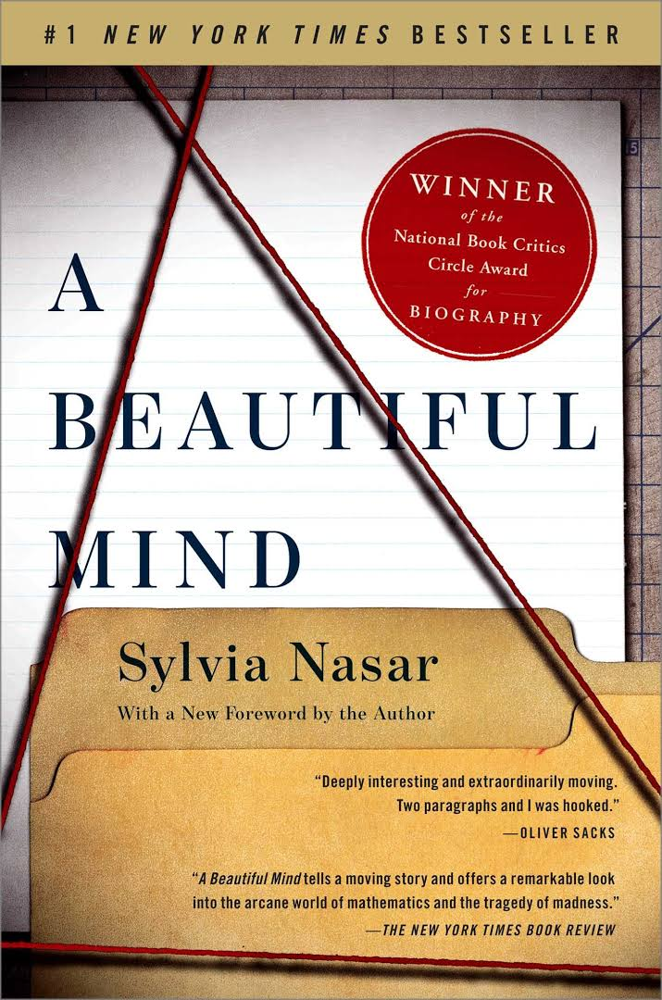

welcome to ebook website
"Life without a Kindle is like life without a library nearby"
— Franz S. McLaren
categories
Children's Book

childers book
A Pair of Schoolgirls
1912
"I'm waiting till I've heard what you all six have to say for yourselves," said Kitty Palgrave
condescendingly. "I shan't make up my mind until the very last minute."
"It's so difficult to choose between you," added Ellie Simpson, a pert little person of twelve.
The Book of Sports
1852
Bounds or prisons, a player from the other side immediately following to capture him. one from the
other side follows after the second to capture him, and so on, both parties sending out as many as
they think fit.
Alibi Ike
1852
Bounds or prisons, a player from the other side immediately following to capture him. one from the
other side follows after the second to capture him, and so on, both parties sending out as many as
they think fit.
Long Distance
2021
Vega’s summer vacation is not going well.
When her parents decide it’s time to pack up and leave her hometown of Portland, Oregon, behind for
boring Seattle, Washington, Vega is more than upset—she’s downright miserable. Forced to leave her
one
and only best friend, Halley, behind, Vega is convinced she’ll never make another friend again.
Teen and Young Adult Books

Thinking, Fast and Slow
2011
From framing choices to people's tendency to replace a difficult question with one which is easy to
answer, the book summarizes several decades of research to suggest that people have too much
confidence in human judgment.
The 48 Laws of Power
1998
Amoral, cunning, ruthless, and instructive, this piercing work distils three thousand years of the
history of power into forty-eight well-explicated laws. As attention-grabbing in its design as it is
in its content, this bold volume outlines the laws of power in their unvarnished essence,
synthesizing the philosophies of Machiavelli, Sun-tzu, Carl von Clausewitz, and other great
thinkers.
The Gifts of Imperfection
1868
The Gifts of Imperfection, teaches us not to change ourselves to adapt to
expectations, instead, we should embrace and engage with our
imperfections. The core insights center on empathy, understanding, and
adopting "wholehearted living," so that we start living for ourselves, and
not for other people.

A beautiful mind
2012
A Beautiful Mind is Sylvia Nasar's award-winning biography about the mystery of the human mind, the
triumph over incredible adversity, and the healing power of love.
Alan Turing: The Enigma
2014
At the same time, this is the tragic account of a man who, despite his wartime service, was
eventually arrested, stripped of his security clearance, and forced to undergo a humiliating
treatment program--all for trying to live honestly in a ...